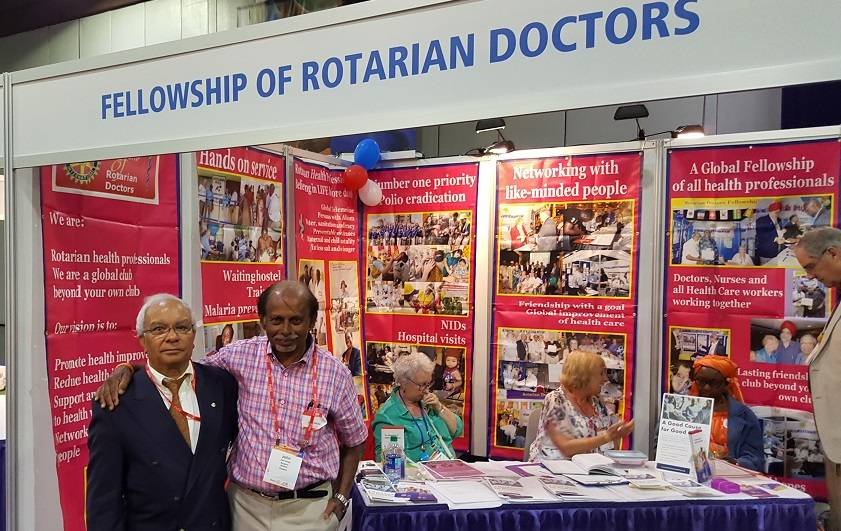

Home / About us

The Rotarian Doctors Fellowship started in 1991 by a small group of Rotarian Doctors in the US headed by Past District Governor Dr. Jim Shamblin (Governor District 6190). Jim’s enthusiasm and personal contact produced a membership list of about 150 in over 30 countries.
RI’s recognition of the group came in 1993 as Medicine/Health Vocational Fellowship – there was a large attendance by members of the new Fellowship in 1994 RI Convention in Taipei. Jim’s personal commitment and enthusiasm led to membership growth beyond the 300 mark. There were Rotarian Nurses, Podiatrists, and Pharmacists as members. Jim was succeeded by Past Governor and Family Physician, Dr John Neasham (RI District 1040) who served as Chairman from 1996 to 1999. As well as meeting at conventions, there were friendship exchanges by members visiting the US, UK and Turkey. John was succeeded by Obstetrician Gynaecologist Dr Himansu Basu (District 1120) who served as Chairman 1999 to 2002.
Many members felt the need to redefine the activities of the Fellowship to include hands-on efforts of members. This was done and the changes reflected in a change of name – International Fellowship of Rotarian Physicians was recognised by the RI Board in 2002. Dr. Himansu Basu served as Chairman from 2002 to 2009. More professional contacts and activities followed – this included professional visits to Hospitals at the place of Rotary Conventions, presentation of scientific aspects of Rotary programmes and Projects undertaken by membership, Area Scientific Meetings, Scientific Visits and collaboration with other organisations such as Rotary Doctor Bank of Great Britain and Ireland and Men’s Health Network (MHN) – a US based NGO.
With emergence of Rotary Fellowships in Nursing, Plastic Surgery, Dental Volunteers etc. the name and scope were changed. Activities were also focused on larger projects with more emphasis on impact, sustainability and Rotarians involvement specially vocational expertise for service. Larger sustainable programmes in Tanzania, India were supported by members of Fellowship. Specially worth mentioning are the Ukerewe and CALMED projects. An active members Google group was established in 2007 and this continues to flourish as a resource for information and discussion amongst members. Himansu Basu Served as Chairman from 2009 to 2010. PDG Dr John Philip (District 1040, 2008-09) a Surgeon has been Chairman from 2010 –to 2023 followed by Herbert Ederer. The programmes have become diverse, reflecting the interests of members, their expertise and hands on efforts.
In 2020 the Fellowship changed its name to acknowledge the trend in health care where professionals from different backgrounds work together in a multidisciplinary and collaborative setting. In 2020 we adopted a new constitution to reflect the change.